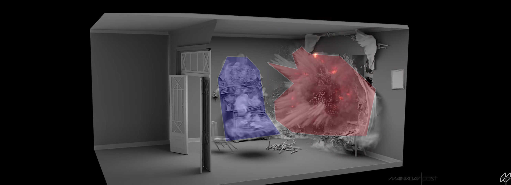

Creative Technology at Rockwell Group
My work at Rockwell Group
I worked for a year at the Lab At Rockwell Group, building interactive installations. It was an interesting experience for me, and I was pretty out of my comfort zone as far as design went. That being said I had a lot of fun building things for work: for example light installations at Luminaries, and VR prototypes for Hardrock Oculus. In this post I wanted to highlight the big ideas that I thought were compelling and could lead to extensible systems and products.
Idea 1: Realtime VFX compositing for Interactive Installations
I've always been a perfectionist as far as graphics go. I've been obessesed with lighting ever since I started doing graphics work a couple years back, and it's relationship to human perception. I think all people come with some natural algorithms baked into their brains: the ability to detect faces and facial expressions, and also the ability to understand lighting .
 Flowers rendered in Arnold
Flowers rendered in Arnold
|
 Flowers rendered in unity HDRP
Flowers rendered in unity HDRP
|
The aesthetic difference between those two photos is stark, and highlights why I think studios should lean towards rendered content. The discussions we had at the Lab really came down to trading off pre-computed pieces with realtime interactivity, but I think that was a false dichotomy. I really think there is a potential future in which interactive installations use rendered content in clever ways. For interactive installations there is generally a fixed viewpoint camera: which means in theory you could precompute lighting interactions between layers, and composite in realtime. Just like in Nuke or After effects, using layers to blend layer information could let artists create stunning interactive pre-rendered pieces.
|

Compositing Example using Nuke, Main Road Studios
|
Idea 2: VR Systems for Visual Art Previz
This idea was one we really pushed and succeeded at to some degree. For all the projects I worked on at my time at Rockwell, me and the senior creative technologist always spent the time to prototype our installations in Unity3D. It made designing these things much easier than it would be normally. We did try to push other studios to adopt such techniques: but architecture is a slow moving industry. People like their process, and switching costs are always huge.
Idea 2: Custom AR Mounts for AR Museums
Idea 3: Networked VR Systems for Spatial Analytics